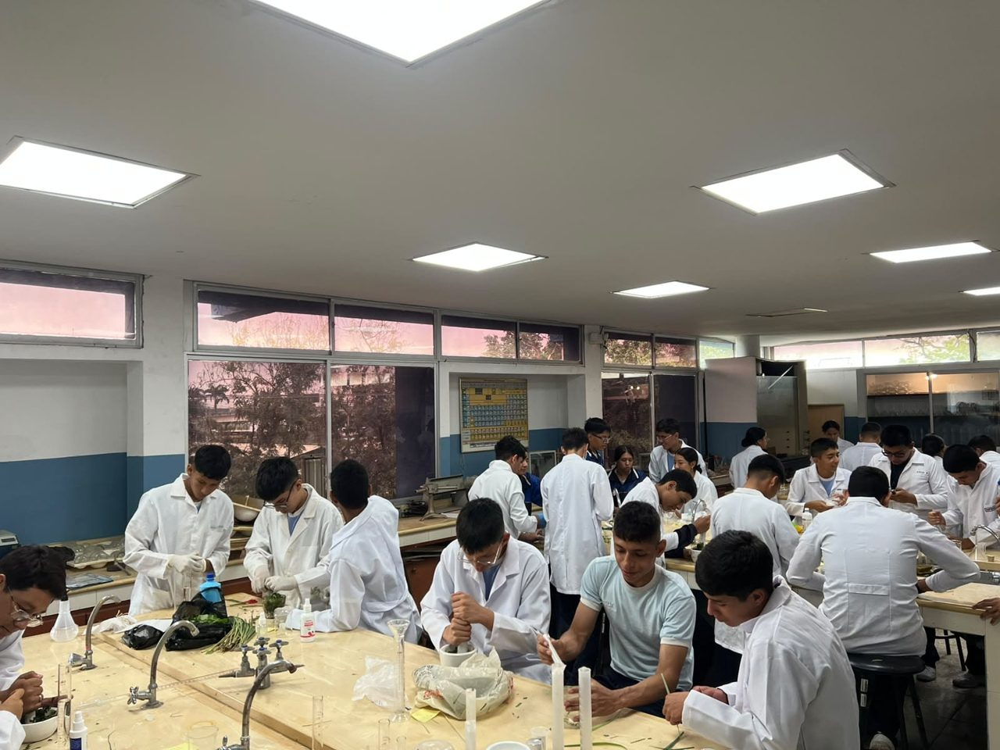

Este proyecto surgió de una pregunta que nos planteamos en clase: aunque muchas personas utilizan repelente para mosquitos, ¿realmente conocen la forma correcta de aplicarlo? A partir de esta inquietud, los estudiantes de Primero de Bachillerato decidimos investigar el tema, consultar fuentes oficiales de salud y preparar un recurso informativo que permita comprender cómo prevenir las picaduras de manera responsable.
Elegimos este tema porque Guayaquil tiene un clima cálido y húmedo que favorece la presencia de mosquitos durante gran parte del año. Por ello, el repelente puede ser una herramienta importante para reducir las picaduras, siempre que se utilice de acuerdo con las indicaciones del producto.
Durante la investigación comprendimos que una aplicación incorrecta puede disminuir la protección y ocasionar riesgos innecesarios. Por esta razón, consultamos información confiable y organizamos los datos de manera sencilla para que nuestros compañeros, familiares y otras personas de la comunidad puedan comprenderlos.
Con este trabajo buscamos aprender a reconocer fuentes confiables, promover hábitos de prevención y elaborar un material educativo que ayude a compartir lo investigado con nuestra comunidad educativa.
«La prevención comienza cuando conocemos la forma correcta de protegernos».Equipo de investigación, Primero de Bachillerato.
Sección 02
Conociendo el problema
Antes de presentar nuestras recomendaciones, organizamos la investigación mediante preguntas que nos permitieron comprender el problema y conocer mejor el uso adecuado de los repelentes.
¿Por qué se realiza esta investigación?
Esta investigación se realiza porque las picaduras de mosquitos pueden causar molestias y, en determinadas circunstancias, transmitir enfermedades como el dengue. Conocer los riesgos y aprender a utilizar correctamente el repelente contribuye al cuidado de nuestra salud y la de nuestras familias.
¿Para qué se realiza?
Se realiza para proporcionar información útil a la comunidad educativa y fomentar hábitos de prevención. Además, busca que las personas comprendan la importancia de elegir y aplicar los repelentes siguiendo las indicaciones de fuentes confiables, en lugar de guiarse únicamente por costumbres o recomendaciones sin comprobar.
¿Bajo qué contexto se realiza?
El proyecto se desarrolla en Guayaquil, una ciudad de clima tropical, cálido y húmedo, donde las condiciones ambientales pueden favorecer la presencia del mosquito Aedes aegypti. En este contexto, investigar las medidas de prevención resulta importante para promover el cuidado personal y colectivo dentro y fuera de la institución educativa.
¿Qué investigaron los estudiantes?
Revisamos qué es un repelente, para qué sirve, cómo funciona y en qué situaciones se recomienda utilizarlo. También investigamos cómo debe aplicarse correctamente, qué precauciones deben considerarse, cuáles son los errores más frecuentes, por qué es importante leer la etiqueta y qué diferencias existen entre prevenir una enfermedad y tratarla.
Lo que aprendimos, punto por punto
01 ¿Qué es un repelente?
Un repelente de insectos es un producto que se utiliza sobre la piel expuesta o la ropa, según las indicaciones de su etiqueta, para mantener alejados a los mosquitos y otros insectos. Su función principal es reducir la posibilidad de que se acerquen y piquen; no necesariamente los mata.
02 ¿Para qué sirve?
Sirve para disminuir el riesgo de sufrir picaduras de mosquitos y contribuir a la prevención de enfermedades transmitidas por determinadas especies. Su utilización debe acompañarse de otras medidas de protección, especialmente en lugares donde existe presencia de mosquitos transmisores.
03 ¿Cómo funciona?
Los repelentes autorizados pueden contener ingredientes activos como DEET, icaridina, IR3535 o aceite de eucalipto de limón formulado para este propósito. Estas sustancias interfieren con las señales que los mosquitos utilizan para localizar a las personas. La duración de la protección depende del ingrediente activo, su concentración y las condiciones de uso.
04 ¿Cuándo debe utilizarse?
Se recomienda utilizar repelente cuando se está en lugares donde hay mosquitos o existe riesgo de picaduras, especialmente durante actividades al aire libre. También es importante respetar el tiempo de protección indicado en la etiqueta y volver a aplicarlo únicamente cuando corresponda.
05 ¿Cómo debe aplicarse correctamente?
El repelente debe utilizarse siguiendo las instrucciones del envase. Se debe evitar el contacto con los ojos, la boca, las heridas y la piel irritada. Para aplicarlo en el rostro, primero se coloca en las manos y después se distribuye cuidadosamente, evitando los ojos y la boca. No debe aplicarse debajo de la ropa. Si también se utiliza protector solar, generalmente se aplica primero el protector y después el repelente, respetando las instrucciones de ambos productos.
06 ¿Qué precauciones deben tenerse?
Es necesario revisar la edad recomendada, las advertencias y las instrucciones de uso. En bebés y niños pequeños deben seguirse las recomendaciones específicas del producto y consultar a un profesional de salud cuando sea necesario. También se debe conservar el repelente en su envase original y fuera del alcance de los niños pequeños.
07 ¿Qué errores deben evitarse?
Se debe evitar aplicar el producto sobre heridas o piel irritada, rociarlo cerca de alimentos o en espacios cerrados sin ventilación adecuada y utilizar productos sin información confiable sobre su autorización. Tampoco se debe aplicar directamente en el rostro de niños pequeños ni aumentar la frecuencia de aplicación pensando que así se obtiene mayor protección.
08 ¿Por qué es importante leer la etiqueta?
La etiqueta contiene información sobre los ingredientes activos, la concentración, el tiempo aproximado de protección, las edades recomendadas, las advertencias y las instrucciones de aplicación. Leerla antes de comprar y utilizar el producto permite conocer sus características y ayuda a evitar errores que podrían afectar su seguridad y eficacia.
09 Prevención y tratamiento: ¿son lo mismo?
No son lo mismo. La prevención comprende las acciones que se realizan para reducir el riesgo de enfermar, como utilizar repelente adecuadamente, cubrir la piel y eliminar los recipientes con agua estancada. El tratamiento corresponde a la atención médica que recibe una persona cuando presenta una enfermedad. Por eso, el repelente es una herramienta preventiva y no cura el dengue ni sustituye la atención médica.
Sección 03
Materiales del proyecto
Estos fueron los recursos que utilizamos para investigar, analizar y construir el producto final.
Repelente para mosquitos
Producto comercial seleccionado como objeto principal de estudio para conocer sus características, instrucciones y recomendaciones de uso.
Envases y etiquetas
Se revisaron los envases y las etiquetas de los repelentes para identificar sus ingredientes, advertencias, instrucciones y demás información relevante para su utilización responsable.
Computadores y celulares
Se utilizaron estos dispositivos para buscar información, consultar fuentes oficiales, redactar los contenidos y diseñar el material informativo.
Acceso a internet
Permitió consultar páginas de organismos de salud pública y encontrar información sobre los mosquitos, las picaduras y las medidas de prevención.
Fuentes bibliográficas
Se utilizaron publicaciones, guías informativas y documentos de organismos oficiales para respaldar los datos presentados en la investigación.
Cuadernos y fichas de investigación
Sirvieron para registrar las preguntas principales, organizar los datos encontrados y anotar las ideas más importantes durante el desarrollo del proyecto.
Material audiovisual
Se consideraron imágenes y recursos visuales relacionados con los mosquitos, los repelentes y las medidas de prevención para apoyar la presentación de la información.
Carteles y material informativo
Se utilizaron como referencia para organizar los contenidos y elaborar un producto comunicativo claro, ordenado y comprensible para la comunidad educativa.
Sección 04
Nuestra evidencia
El proceso de elaboración del repelente para mosquitos se documentará mediante evidencias fotográficas que realizo cada uno con su equipo de trabajo.

Sección 05
Nuestro producto
Como resultado de la investigación, el equipo elaboró un recurso de comunicación dirigido a la comunidad educativa. Para compartir la información de manera clara y organizada, elegimos un tríptico informativo sobre el uso adecuado del repelente para mosquitos.
¿Qué producto desarrollaron?
Desarrollamos un tríptico informativo titulado «Uso adecuado del repelente para mosquitos», en el que reunimos los principales conocimientos obtenidos durante la investigación y los presentamos de manera sencilla y visual.
¿Cuál es su objetivo comunicativo?
Su objetivo es informar y orientar a los estudiantes y demás integrantes de la comunidad educativa sobre la importancia de utilizar correctamente los repelentes, reconocer las precauciones necesarias y adoptar medidas para prevenir las picaduras de mosquitos.
¿A quién está dirigido?
Está dirigido a los estudiantes, docentes, familias y demás miembros de la comunidad educativa que deseen aprender sobre el uso responsable de los repelentes y la prevención de las picaduras.
¿Qué información contiene?
El tríptico explica qué es un repelente, para qué sirve, cómo funciona y cuándo debe utilizarse. También incluye recomendaciones para su aplicación, precauciones importantes, errores que deben evitarse, la importancia de leer la etiqueta y las diferencias entre prevención y tratamiento.
¿Cómo puede usarse en la comunidad educativa?
El tríptico puede compartirse durante exposiciones, charlas educativas y actividades escolares. También puede colocarse en carteleras o distribuirse entre los estudiantes para que la información llegue a sus hogares y pueda ser útil para sus familias.
¿Qué aprendizaje obtuvieron al elaborarlo?
Al elaborar el tríptico aprendimos a seleccionar información relevante, consultar fuentes confiables y organizar los contenidos para que otras personas puedan comprenderlos fácilmente. También reconocimos la importancia de comunicar recomendaciones relacionadas con la salud de forma clara y responsable.
Sección 06 · Artículo de opinión
Nuestra opinión: prevenir también es aprender
Al comenzar esta investigación, pensábamos que utilizar repelente para mosquitos era una actividad sencilla que no necesitaba demasiada explicación. Sin embargo, al revisar la información descubrimos que elegir el producto adecuado, aplicarlo correctamente y respetar sus indicaciones son aspectos importantes para proteger nuestra salud.
En Guayaquil, las condiciones de calor y humedad favorecen la presencia de mosquitos, por lo que consideramos que la prevención debe formar parte de nuestros hábitos cotidianos. No se trata solamente de utilizar repelente cuando salimos de casa, sino de conocer cómo funciona y qué medidas adicionales podemos adoptar para reducir las picaduras.
Uno de los aspectos que más nos llamó la atención fue la cantidad de errores que pueden cometerse por desconocimiento, como no leer la etiqueta, aplicar el producto sobre la piel irritada o utilizarlo con mayor frecuencia de la recomendada. Esto demuestra que contar con información confiable es fundamental para evitar riesgos innecesarios.
También comprendimos que prevenir una enfermedad no es lo mismo que tratarla. Utilizar repelente, proteger la piel y eliminar recipientes con agua estancada son acciones preventivas, mientras que una enfermedad requiere la atención correspondiente de los profesionales de salud.
Consideramos que esta responsabilidad no depende únicamente de cada persona, sino también de la colaboración de las familias, los estudiantes y la comunidad. Si todos contribuimos a mantener los espacios limpios y compartimos información correcta, podemos ayudar a reducir los riesgos relacionados con los mosquitos.
Finalmente, este proyecto nos enseñó que investigar no consiste solamente en reunir información, sino también en comprobarla y comunicarla de manera responsable. Por ello, creemos que aprender a utilizar correctamente los repelentes es una forma sencilla de cuidar nuestra salud y contribuir al bienestar de quienes nos rodean.
Sección 07
¿Qué aprendimos?
Estas son las conclusiones que el equipo obtuvo al cerrar la investigación.
Comprendimos que el repelente es una herramienta de prevención que ayuda a reducir las picaduras de mosquitos cuando se elige y utiliza de acuerdo con las indicaciones del producto.
Aprendimos que leer la etiqueta antes de comprar y aplicar un repelente permite conocer sus ingredientes, instrucciones, advertencias y tiempo aproximado de protección.
Reconocimos que la prevención de las picaduras requiere combinar diferentes medidas, como utilizar repelente adecuadamente, proteger la piel y eliminar los lugares donde se acumula agua y pueden reproducirse los mosquitos.
Entendimos que no toda la información sobre salud que encontramos en internet es confiable. Por eso, es importante consultar fuentes oficiales y verificar los datos antes de compartirlos.
El trabajo en equipo nos permitió desarrollar habilidades de investigación, organización y comunicación, además de comprender que cada persona puede contribuir a la prevención y al cuidado de la comunidad.
Sección 08
Fuentes consultadas
La investigación se apoyó en organismos oficiales de salud pública, priorizando información verificable y evitando afirmaciones médicas que no estuvieran respaldadas por fuentes confiables.
Ministerio de Salud Pública del Ecuador«Ecuador en alerta para prevenir el contagio del dengue».Portal oficial: https://www.salud.gob.ec/
Organización Panamericana de la Salud (OPS/OMS)«Dengue: síntomas, prevención y tratamiento».Portal oficial: https://www.paho.org/es/temas/dengue
Centros para el Control y la Prevención de Enfermedades (CDC), Estados Unidos«Evite las picaduras de mosquitos».Portal oficial en español: https://www.cdc.gov/mosquitoes/es/
Centros para el Control y la Prevención de Enfermedades (CDC), Estados UnidosInformación sobre la prevención de las picaduras de mosquitos.Portal oficial: https://www.cdc.gov/mosquitoes/
Agencia de Protección Ambiental de Estados Unidos (EPA)«Encuentre el repelente de insectos adecuado».Portal oficial en español: https://espanol.epa.gov/
MedlinePlus, Biblioteca Nacional de Medicina de Estados Unidos«Seguridad de los repelentes de insectos».Portal oficial: https://medlineplus.gov/spanish/